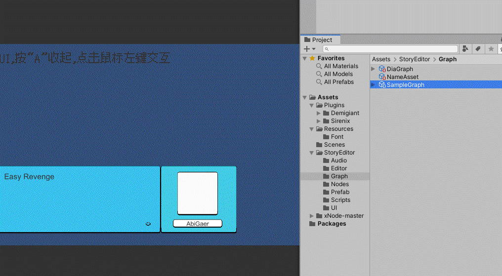

使用xNode制作可视化剧本编辑插件(1)
大家好，我是炎拳。
本来还原星露谷的第三篇，受到 @陈虹松老师的启发，希望能做一个方便文字剧情和过场动画结合的小工具。
但机缘巧合之下，我发现了一款开源的可视化节点插件：X Node， 这是个非常强大且直观的节点编辑器框架，提供了类似 Shader Graph等Unity内置系统的Graph和Node的自定义创建。
于是经历的漫长的探索后，最终借助Xnode ，我完成了一个可视化的剧本编辑插件，并配合TimeLine，邀请星露谷中的居民担当演员，简单还原了漫画《电锯人》中我很喜欢的篇章《失恋，花，电锯》，成品在这里：
这张Gif图简单的展示了其中的功能：

再来介绍下这个插件，首先这个插件主打的就是在Unity中直接撰写剧本，你可以直接新建一个DialogueGraph，新建一个Chat节点，直接在其中撰写对话:
并轻松选择人物图片和这段台词所对应的UI效果（基于Dotween，目前还未添加更多）。
需要玩家进行选择决定之后剧情，同样只需要添加Option节点，写好选项：
如果需要对话框暂时消失，你可以选择“pause”节点并输入你希望暂停的时间；如果需要触发一个方法，你可以选择“C Event”并输入在PlayDialogueGraph中注册好的方法名，之后玩家点击到这里就会自动调用后，进入下一项。
目前插件还有很多不足，比如对Timeline的控制是双向的，使用起来很不方便，后面控制的方式应该会改成Timeline对这种Graph的单向控制。再比如Xnode Graph采用的渲染方式还是来自于Unity的EditorWindow。而其中管理窗口元素渲染的OnGUI（）会在鼠标移动的时候强制刷新，而Graph内的每个单独的Node也会调用OnGUI（）刷新，所以实际刷新的次数非常恐怖，进而导致Graph卡顿 ，所以当对话列表较长时需要缩小来保证流畅。
这个问题有人在git上提交给了xNode 作者，但貌似作者也没有很好的解决方案，如果有大佬有办法请务必评论区留言，或者直接在这解答：
https://github.com/Siccity/xNode/issues/125
接下来的文章我会分享一部分在开发过程中遇到的坑，以及利用X node的使用教程，我已经把工具的示例工程上传，里面也有一份简单说明。
Github工程：
ydwj/StoryEditor
文章最后，特别感谢 @马遥 马老师，最初插件的设计思路就是马老师的，并且之后迭代中也指出了很多不足，帮俺解决了大BUG。
同时感谢“深空爱吃肉包儿”在机核网分享的，同样基于X node制作 的playtext的制作思路文章，给了我很大启发，期待你的游戏~